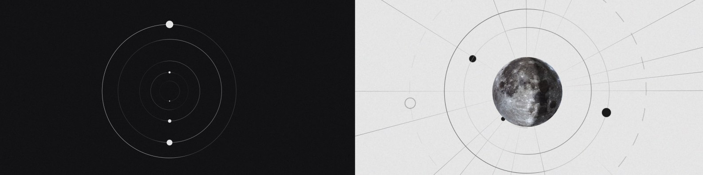
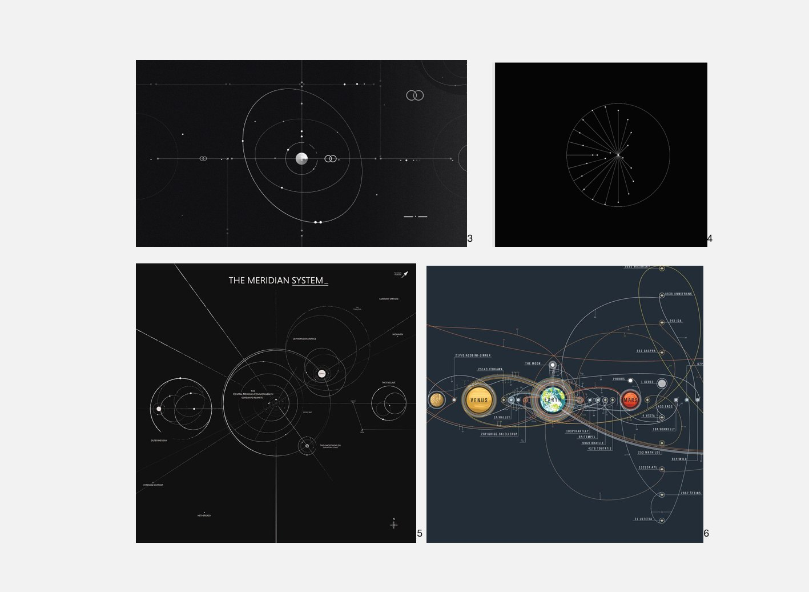
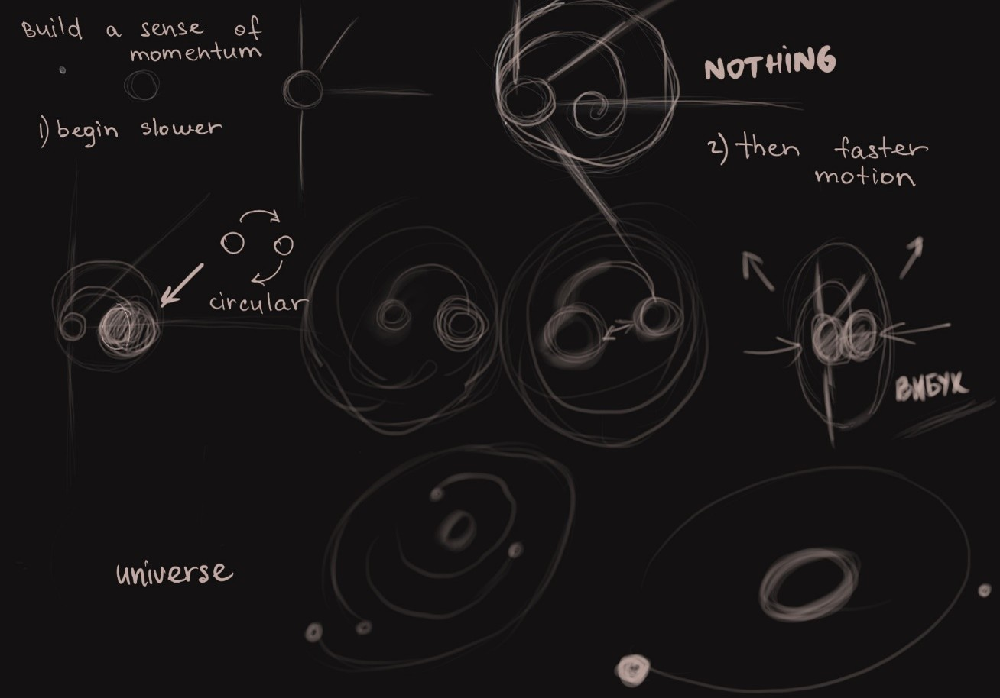
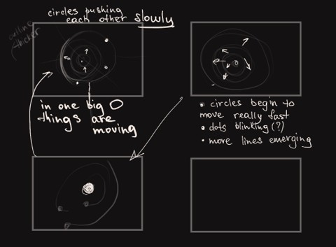
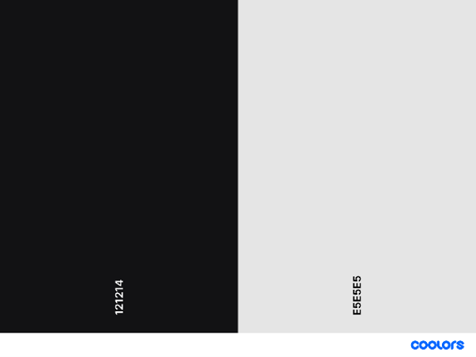
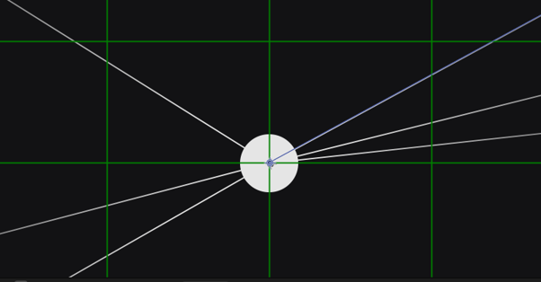
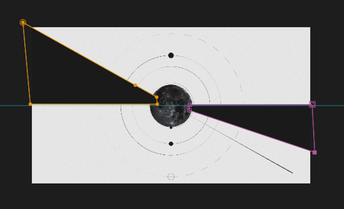

The Big Bang
A seamless loop built only from circles, lines and dots. Chaotic energy builds up, bursts into a solar system, then collapses back to where it started. It is the universe's cycle of creation and destruction.

The spark
The starting point was Loop fun by Coat Rachael Park: thin outlines of shapes that feel chaotic, like celestial bodies, yet still read as one connected thing. I found it through Motionographer.
The brief
Create a seamless animated loop using shapes.
The idea
Abstract orbits, sparks and diagrams led me to the creation of the universe, and it fitted a three-part action: anticipation as the energy builds up, action as the big bang happens and a solar system appears, and reaction as the system ends and loops back into the chaos.
Reference
Orbital maps, space-exploration charts and looping geometric studies all share thin outlines, circular shapes, dots and an overall chaotic feeling.

Sketch and storyboard
I sketched the idea roughly, then simplified it into a storyboard focused on motion flow, contrast, eye trace and transitions.


Palette and sound
The palette is achromatic but not pure black and white, to suggest space. The soundtrack is part of Dark Light II (1/3) by kuroiumi. I chose it because it repeats like a loop but builds to a climax, so the sound contrast mirrors the motion contrast.

Process
I tuned the value graphs, the trim paths of the orbits and the rotation of the dots to follow the track as closely as possible. The big bang itself is a set of thin pen-tool lines and dashes radiating from the centre. A second, lighter version inverted the background to white and added a moon in the second half for more contrast.


Final
Credits
- Role
- Motion Designer (concept, design, animation, sound edit)
- Year
- 2025
- Tools
- After Effects, Premiere Pro
- Tutor
- Andrea Halphin
- Music
- Dark Light II (1/3), kuroiumi
- Moon image
- Full Moon II, MonarchC, Posterlounge
Inspiration
- Park, R. (2015). Loop fun [Image]. Behance.
- dudenas. (2020). Creative coding: Tusi couple [Image]. Dribbble.
- vivaellipsis. (n.d.). Orbital map of the Meridian System [Image]. Redbubble.
- Jobson, C. (2016). The chart of cosmic exploration [Image]. This is Colossal.